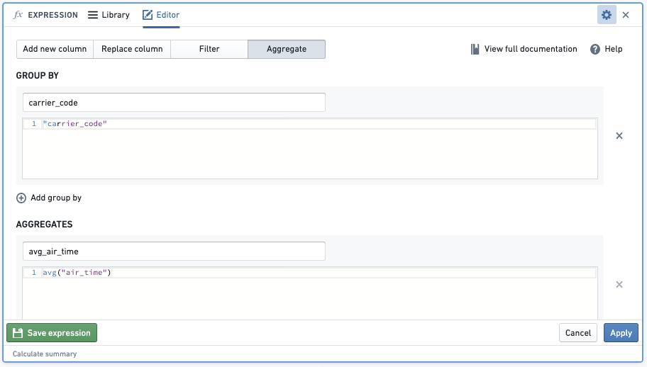
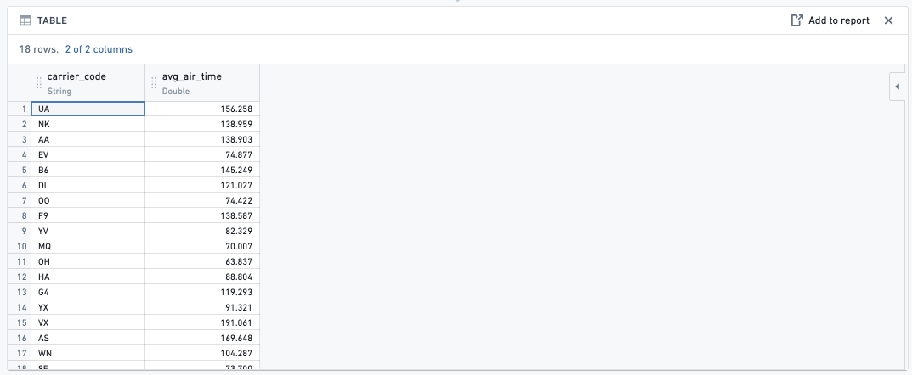
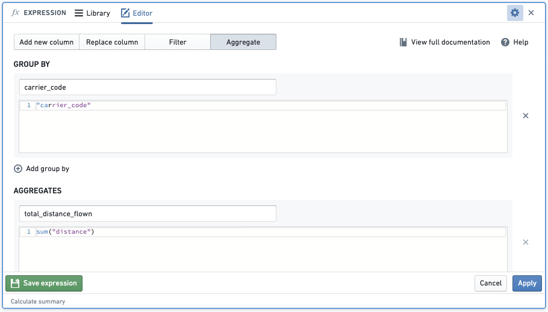
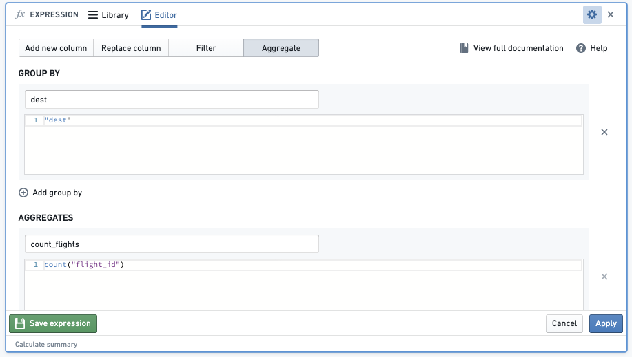
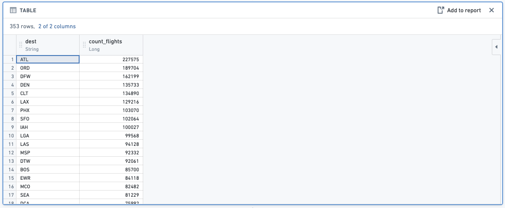

The following are a few frequently asked questions about Contour. For general information, view our Contour documentation.
count_distinct() fails in a window function in the expression boardIn Foundry, every user has their own folder called Your files. This is a folder where users can prototype with data and share their results with other users. Inside the folder, users can create their first analysis:
There are two primary methods for discovering data:
Search: Foundry has a platform-wide search tool located in the workspace sidebar on the left side of the page. This tool will search all resources in the platform and is an excellent method for finding data when you know the name of the dataset. Note that the search tool can be used to find any resource in the platform, including spreadsheets, Contour analyses, and code workbooks.
Data Catalog: The Foundry Data catalog contains cleaned, curated datasets, ready for consumption by business analysts and data scientists. The Data Catalog is an excellent starting point if you are curious about what data already exists in the platform and can be accessed directly from the homepage. You can come back to the homepage by selecting Home in the workspace sidebar.
Sharing a resource with a coworker means they must have access to the Project you are working in. Select Share and send a sharing URL or add your coworker directly to the resource to automatically notify them. If your coworker receives a Permission denied error, they will need to request access. Once your coworker's access to the Project has been approved, they will be able to see the analysis you shared with them over email.
Given the data is often available in its raw form within the Foundry platform, it is important to know how to filter it before you begin creating your analysis. Data filtering will allow you to focus on the elements that are important for your analysis without getting distracted by irrelevant data.
carrier_code = DL), other users can easily replicate their analysis by changing the filter to their use case (for example, carrier_code = UA) or removing the filter altogether to get a global analysis.Analytical operations are applied to an entire column by default, to facilitate analysis of large datasets. If you would like to run an analysis on a smaller selection of rows (similar to selecting a specific cell range in Excel), filter the data down to the desired rows before applying the operations.
To see more filtering options, review our filter data documentation.
There are four options available to change the view of your analysis. You can perform the following:
SORT columns by ascending or descending order
REORDER columns
REMOVE columns
ADD columns: See the VLOOKUP section in common Excel analysis equivalents in Foundry
Create an automated Notepad document: You have the option to add your Contour analysis outputs into an automated Notepad to present your data in executive summaries. This report will change based on the refreshed data in Foundry, removing any need to recreate the same report.
To perform a new calculation in Contour you need to select Add a Column in an expression board. However, instead of cell-level operations, Foundry operates on column-level operations. Instead of a formula multiplying A1 * B1 to return to cell C1, Foundry will multiply column1 * column2 (multiplying every corresponding row-level entry in column1 and column2) to return column3.
Below are some of the most common Microsoft Excel functions and their expression equivalents in Contour. You can apply these calculations in the same way as discussed in How do I apply a calculation?.
CASE
WHEN logical_test THEN value_if_true
ELSE value_if_false
ENDExample: If I want to create a column that returns yes if the flight starts in JFK and no if otherwise, the expression will look like:
CASE
WHEN "origin" = 'JFK' THEN 'yes'
ELSE 'no'
END
Excel: CONCAT(cell1, [cell2],â¦)
CONCAT("col1", ["col2"],...)Example: If I want to create a column with a unique key for each order by concatenating timestamp and order_ID_number columns, the expression will look like:
CONCAT("timestamp","order_ID_number")Excel: VALUE(text)
CAST("col1" AS DOUBLE)STRING, INTEGER, BOOLEAN, DATE, TIMESTAMP, or LONG by replacing the DOUBLE type in the expressionExample: If I want to be able to perform multiplication on some columns but one of the necessary columns cost is classified as a string, the expression will look like:
CAST("cost" AS DOUBLE)Excel: LEFT(text, [num_chars])
SUBSTRING("col1", num2, num3)num2 is the start index and num3 is the length of the substringairport_display_name such as [ALB] Albany International + Albany, NY, [AZA] Phoenix - Mesa Gateway + Phoenix, AZ, [CLT] Charlotte Douglas International + Charlotte, NC, the expression will look like:SUBSTRING("airport_display_name", 2, 3) and would return a column with ALB, AZA, and CLT.Read the expression board and support expression syntax documentation for more information.
flights and you would like to add the column manufacturer and number_of_seats from the aircraft dataset.FLIGHTS DATASET EXAMPLE
| flight_id | date | origin | tail_num |
|---|---|---|---|
| 999 | 2018-04-01 | LAS | N227FR |
| --- | --- | --- | --- |
| 997 | 2018-07-27 | MIA | N303FR |
| ⦠|
AIRCRAFT DATASET EXAMPLE
| tail_number | manufacturer | number_of_seats |
|---|---|---|
| N303FR | Airbus | 186 |
| --- | --- | --- |
| N227FR | Airbus | 180 |
| ⦠|
You could use the join board to enrich your flights dataset with columns manufacturer and number_of_seats from the aircraft dataset. Since both datasets share a column referencing the tail number, we can use this column to join on. If your datasets have columns with the same name that are not join keys, Contour will prompt you to add a prefix to the column names. Then, fill out the following fields:
Add columns), inner join (Intersection), right join (Switch to dataset) or full join.Match Any or Match All conditions.Your enriched dataset will look like this:
| flight_id | date | origin | tail_num | manufacturer | number_of_seats |
|---|---|---|---|---|---|
| 999 | 2018-04-01 | LAS | N227FR | Airbus | 186 |
| --- | --- | --- | --- | --- | --- |
| 997 | 2018-07-27 | MIA | N303FR | Airbus | 180 |
You can quickly compute multiple aggregate values of your data across multiple dimensions through a pivot table board.
To interact with the entirety of pivoted data, use the Switch to pivoted data option on the board which will transition your Contour analysis to the fully-computed pivoted data for all boards beneath the pivot table board.
You can do this in Foundry with the Aggregate option in the expression board. Note that instead of range-level operations that you can select in another spreadsheet software, Foundry operates on column-level operations, so your columns will need to be properly filtered to the rows that you are interested in.


Below are some of the most common Excel aggregate functions and the Contour expression equivalents. You can apply these calculations in the same way as displayed in the How do I apply a function across an entire series of data? question.
total_distance_flown of each airline (carrier_code)
- Result:
Example: Find the number of flights by carrier_code by aggregating the count of total flight_id
Function:

Result:

AVG(): When you aggregate with the avg function, this will average, for example, the air_time of each carrier_code.
MAX(): When you aggregate with the max function, this will find the maximum, for example, of the air_time of each carrier_code.
MIN(): When you aggregate with the min function, this will find the minimum, for example, of the air_time of each carrier_code.
You can add another board to check your resulting dataset.
Table board: By inserting a table board after an analysis, you are able to quickly check to see if the new columns that you added were right or if the logic of a previous board resulted in the intended outcome.
Histogram board: By inserting a histogram board after an analysis, you are provided with a quick overview of the different data categories to give a general sense of the data or if the filtered categories are correct.
The process of saving a dataset from a Contour analysis is largely the same as creating a dataset from a code repository or Code Workbook - the logic is translated into a series of Spark transformations, executed across the cluster, and saved into a dataset that is stored in a distributed file system. There is no row limit restriction when saving an analysis as a new dataset. That said, the greater the scale of the data, the longer it will take to save, as underlying computation will be more computationally expensive. Note that there are, however, row limits when exporting data from Contour, which is distinct from saving a path as a dataset.
Yes, that is correct. There is a 100K row export limit from Contour. If you need to export more than that, you can save the result of Contour as a dataset, and then download it from the Actions dropdown on that Dataset preview page.
The limits for both Contour export and dataset downloads may differ between Foundry enrollments based on partner requirements.
At this time, there is no way to automatically update a Contour analysis path; this must be completed manually. However, it is possible to set a schedule for the resulting dataset of the analysis. Once you have saved the dataset, you can then open the dataset preview and, from the Actions dropdown menu, choose Manage schedules. The resulting dataset will then build based on the way you have configured the schedule.
Yes, you can revert changes by selecting Undo in the top right corner of your screen.

This may happen when your analysis has too many paths. Try deleting unnecessary paths and duplicating again.
Review the section on general performance issues for more information.
I am receiving an error message when building a dataset from Contour.
Refer to our guidance on builds and checks errors for more information.
Pivot table previews do not show all the data within the table. The pivot table calculates aggregates over the entire dataset, and reduces the output to the first 100 columns or 10,000 values to prevent slow browser performance. To get the definitive answer for these large pivot tables, you will need to Switch to pivoted data. You can read more about this in the pivot table documentation.
To troubleshoot, perform the following steps:
My pivot table fails to compute due to a duplicate column. This is generally because there are column names that are equivalent apart from casing.
To troubleshoot, perform the following steps:
Test and test). Foundry dataset column names are case-insensitive, so when the column is pivoted, the columns Test and test are considered duplicates.Your Contour is slow, and you would like to figure out what is causing the decreased performance.
To troubleshoot, perform the following steps:
First, check to determine whether the input datasets used in your analysis are using Parquet or Avro files; if not, ensure that you are working on an appropriate, clean version of the dataset.
Check if you are using a raw, ingested version of a dataset that is stored as a CSV file, which is non-performant. This is the most frequent cause of this issue.
Check the partitions of your input dataset(s). If datasets used in your analysis are poorly partitioned, then this will result in slower performance.
To check the size of files in your input datasets go to Dataset â Details â Files â Dataset Files.
The files should be at least 128 MB each. If they are too small, or much too large, you will need to re-partition them.
If you have a very long path, then you should materialize intermediate datasets and create new paths that begin with these newly materialized datasets. This will reduce redundancy in logic execution as each board executes the full query path required to create the board (such as the transformation logic used, if any, in all previous boards).
Consider reducing the number of paths that you have in an analysis. This can slow down the browser performance specifically when using the path overview screen.
For further reading, review our Contour analysis performance optimization documentation.
count_distinct() fails in a window function in the expression boardThe count_distinct() function is not available inside window functions due a limitation in Spark. Review official Spark documentation â.
You can potentially achieve the same thing (depending on the window logic you are looking to use) in the pivot table board, which offers a unique count aggregation option. You can define your "window" as the rows/column combinations and then generate a unique count for each intersection.